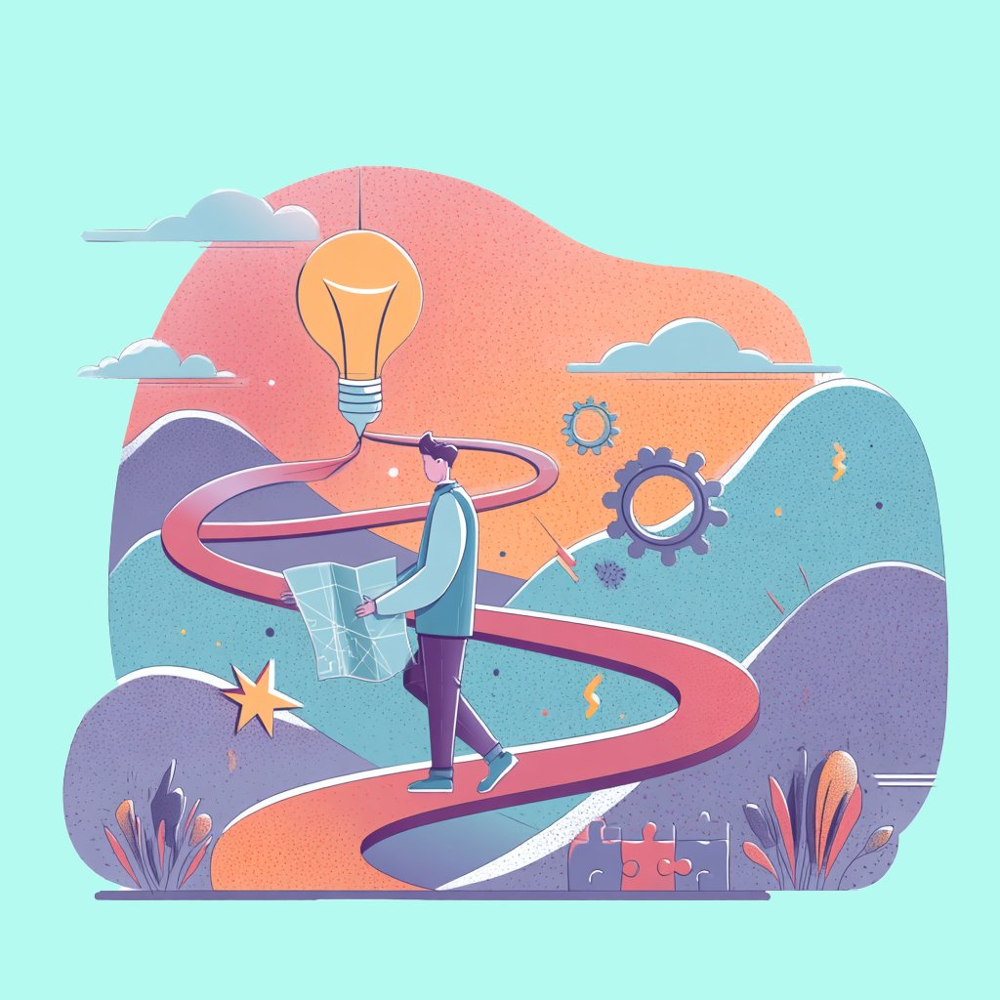

关于此风格
插画风格的网页设计侧重于使用定制的、通常是手绘风格的图形元素来传达信息、营造氛围和增强品牌个性。它不仅仅是添加图片，而是将插画作为设计的核心组成部分。
这种风格可以非常多样化，从简约的线条画到复杂的场景插画，关键在于其独特性和艺术性。
主要特点:
- 定制插画 (Custom Illustrations): 核心元素是为特定目的创作的独特插画，而非通用图库素材。
- 独特角色/场景 (Unique Characters/Scenes): 常常包含代表品牌或概念的原创角色、吉祥物或场景描绘。
- 叙事性 (Storytelling): 插画常被用来讲述品牌故事、解释复杂概念或引导用户流程。
- 特定调色板 (Specific Color Palette): 色彩方案通常与插画本身的风格紧密配合，可能柔和、鲜艳或具有特定主题。
- 手绘/有机感 (Hand-drawn/Organic Feel): 即使是数字创作，也常常带有手绘的质感、不规则的线条或有机的形状。
- 与布局融合 (Integration with Layout): 插画不仅仅是装饰，而是与文本、按钮和其他界面元素巧妙地结合在一起。
- 情感连接 (Emotional Connection): 通过艺术化的表达，更容易与用户建立情感联系。
插画风格非常适合需要强调创意、友好、人性化或讲述故事的网站，如初创公司、创意机构、儿童产品、非营利组织以及个人作品集。

示例 AI Prompt
Design a website landing page using a friendly illustration style. Feature a custom illustration of diverse people collaborating, use a warm and inviting color palette (oranges, soft blues), Poppins font, rounded buttons, and integrate the illustration smoothly with the text content.（中文解释：使用友好的插画风格设计一个网站着陆页。包含一个展示多元人群协作的定制插画，使用温暖且吸引人的调色板（橙色系、柔和蓝），Poppins 字体，圆角按钮，并将插画与文本内容流畅地结合起来。）
主题 CSS 代码片段
以下是将插画风格应用为全局主题的核心 CSS 代码 (body.theme-illustration):
/* 9. Illustration Style Theme */
body.theme-illustration {
--page-bg: #fdf8f5; /* Soft, warm background */
--page-bg-gradient: none;
--text-color: #5c4e46; /* Earthy text color */
--heading-color: #d96c47; /* Warm, inviting heading color */
--link-color: #e07a5f; /* Coral link color */
--link-hover-color: #d96c47;
--border-color: #e8dccd; /* Soft border */
--card-bg: #ffffff; /* White card */
--card-shadow: 0 4px 15px rgba(92, 78, 70, 0.08); /* Soft shadow */
--card-hover-shadow: 0 6px 20px rgba(92, 78, 70, 0.12);
--header-bg: #ffffff;
--header-text-color: var(--heading-color);
--header-shadow: 0 2px 5px rgba(92, 78, 70, 0.05);
border-bottom: 1px solid var(--border-color);
--footer-text-color: #8a7a70;
--footer-bg: var(--page-bg);
--button-bg: #e07a5f; /* Coral button */
--button-text-color: white;
--button-hover-bg: #d96c47;
--button-border: none;
--button-secondary-bg: #f4f1ee; /* Light beige secondary */
--button-secondary-text-color: #8a7a70;
--button-secondary-hover-bg: #e8dccd;
--button-secondary-border: 1px solid #e8dccd;
--prompt-bg: #fefbf9; /* Very light prompt bg */
--prompt-text-color: #6b5e56;
--base-font: var(--font-pop); /* Friendly font like Poppins */
--heading-font: var(--font-pop);
--card-border-radius: 12px; /* Soft rounded corners */
--button-border-radius: 8px; /* Rounded buttons */
}
/* Illustration Specific Adjustments */
body.theme-illustration h1,
body.theme-illustration h2,
body.theme-illustration h3 {
font-weight: 600; /* Slightly softer weight */
}
/* Add placeholder for where illustrations would go */
body.theme-illustration .illustration-placeholder {
background-color: #e8dccd;
border-radius: var(--card-border-radius);
min-height: 150px;
display: flex;
align-items: center;
justify-content: center;
color: var(--footer-text-color);
font-style: italic;
margin-bottom: 1rem;
text-align: center; /* Center text */
padding: 1rem; /* Add some padding */
}
注意：插画风格的精髓在于高质量的定制插画本身。CSS 主要负责提供一个和谐的背景和界面元素，以衬托插画。
资源下载 (示例)
下载包含此风格更完整 CSS 定义（可能包括特定组件样式、字体文件引用等）的压缩包。
下载 illustration.zip